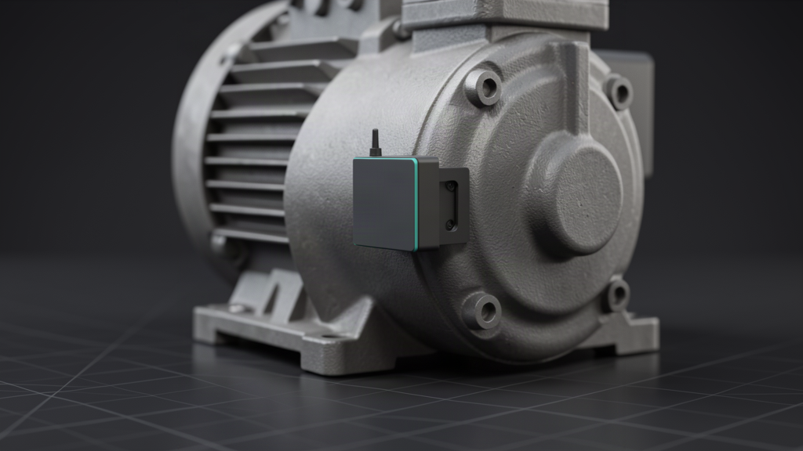
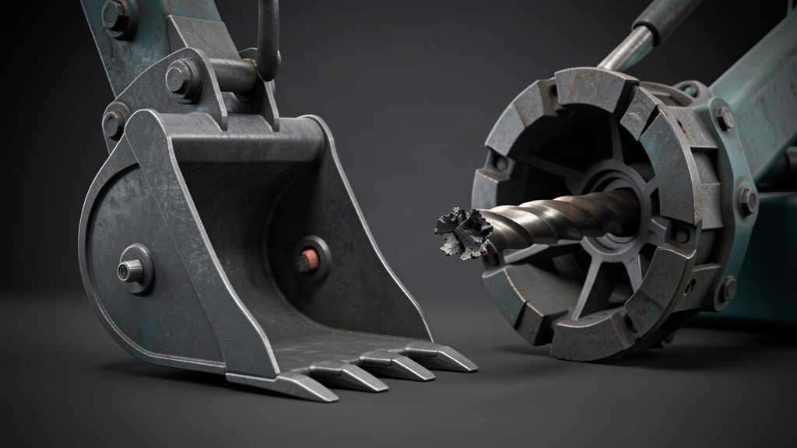
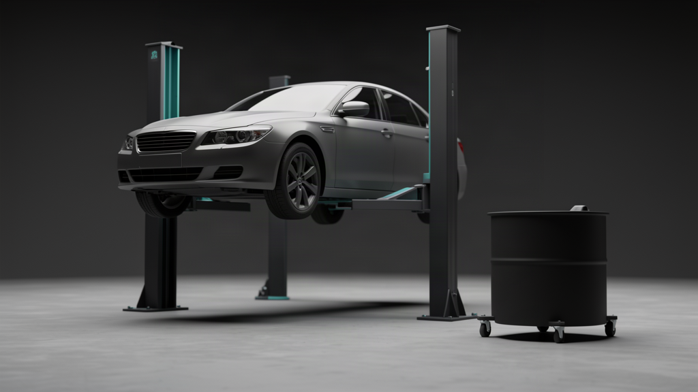
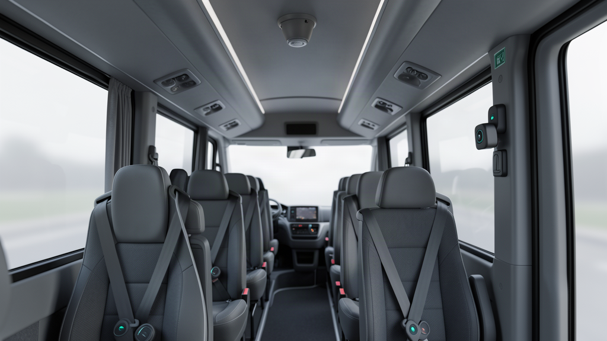

Fixed plant · Condition monitoring · LoRaWAN
RotaMon
A multi-parameter condition-monitoring node that hears a machine begin to fail before it starts to vibrate.
S5 System · Product catalogue
One page per product line. Each covers the same five things: the problem, how it works in plain language, the key specifications, where it is used, and who it is for — with a single next step. Written for engineers, not for a purchasing committee.
Pages are published in three states. Pilot programme — open means the product can be scoped for the 8-week paid Instrumentation Pilot now. Awareness — spec on request means the line is published as product information with no conversion offer. One line is held from promotion entirely while its name is settled.

Fixed plant · Condition monitoring · LoRaWAN
A multi-parameter condition-monitoring node that hears a machine begin to fail before it starts to vibrate.

Mineral processing · Wear liners · Flex-PCB sensing
Wear-liner thickness sensing that turns a shutdown-day surprise into a trend line.

Mining · Crusher protection · Embedded sensing
Ground-engaging-tool and drill-rod detection, upstream of the crusher rather than downstream of it.

Plant hire · Remote assets · Fuel · Light · GNSS
Fuel, light and location for mobile generation and lighting assets.

Automotive workshops · SMB kits
Jack oil-hours, car-wash chemical levels and a hoist safety-pin interlock — three small jobs, done by sensor instead of by memory.

Bus & coach · BLE mesh · Cabin monitoring
A self-healing BLE mesh for seatbelt, door, smoke/fire and driver-attention monitoring in vehicles already in service.
One product line is built but withheld from all public promotion because its previous working name conflicts with a trademark held by another company. It is not linked from this catalogue and is excluded from search indexing. It will appear here once the owner approves a replacement name.